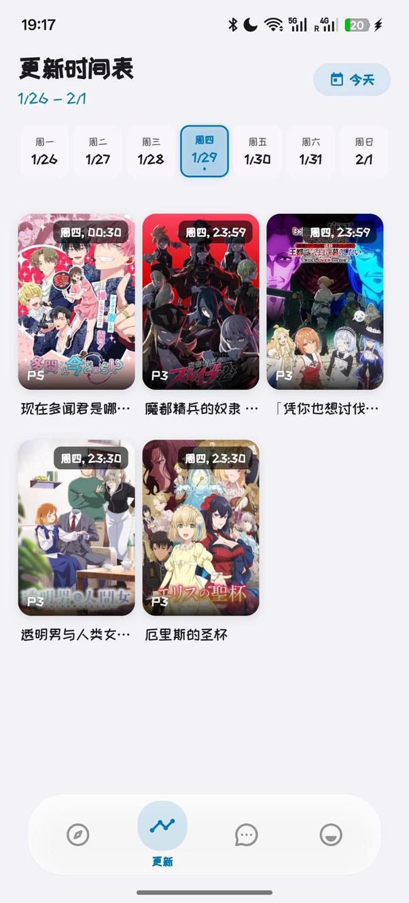

Baka 是什么？追番党必须知道的次世代播放器
整理了一篇关于 Baka 的快问快答——它是什么、多源聚合怎么玩、Anime4K 实时超分对手机要求高不高、断点续传稳不稳，直接戳痛点。
整理了一篇关于 Baka 的快问快答，把追番党最关心的几个问题一次说清。
Baka 到底是什么？跟普通播放器有啥不一样？
Baka 自称"次世代二次元番剧播放器"，这个标签不是白贴的。市面上大多数番剧播放器要么绑死单一内容源，要么功能散得像瑞士军刀——Baka 的核心差异在于三件事捏到了一起：多源聚合加动态脚本扩展、Flutter 跨平台 UI 加 mpv 工业级解码、还有全端内置的 Anime4K 实时超分辨率。
简单说，它是一个能自己装插件扩内容源、画质还能一键拉满、手机桌面通吃的开源播放器。它的官网上有一份完整的功能清单，看完就能知道它跟别家差在哪。GPL-3.0 协议意味着完全免费，也不存在偷偷塞广告的动力。

谁适合用 Baka？
四类人对号入座就好。
追番党是第一目标——每天蹲更新，最怕某个源突然挂掉。Baka 内置多个番剧源不说，还能加载社区分享的 JavaScript 或 JSON 脚本接入新源，相当于给播放器装了个"应用商店"。某源抽风了，一键切到另一个，不耽误看。
画质强迫症是第二类。720p 老番在新设备上拉胯是常态，Anime4K 能把老画面实时推到接近 4K 的观感，而且是一键开，不用像 mpv 那样手动堆着色器配置。
多端用户也舒服——手机、平板、桌面端历史记录和收藏夹能同步出差换设备接着看。
最后一类是折腾党，喜欢研究脚本适配器自己扩内容源的，Baka 的动态脚本机制在同类里属于罕见设计。
安装门槛高吗？怎么装？
安卓端最省事，从官方下载拿 APK 直接装就行。官方渠道之外，各大开源应用站基本都能搜到。桌面端 Windows 和 macOS 有预编译包，Linux 走 Flatpak 或 AUR。
首次启动需要授权存储权限（下载视频存哪）和网络权限（加载内容源和弹幕），之后基本就是开箱即用。Flutter 的 UI 毛玻璃质感做得不错，深浅色自动切换，不像某些播放器桌面端敷衍了事。
多源聚合和动态脚本到底怎么工作的？
内置源只是起点，真正的杀手级特性是动态脚本适配器。简单说，就是别人写好一段脚本（JavaScript 或 JSON），你加载进去，播放器就多了一个新内容源。这些脚本存在社区里，更新也跟着源站同步，不用等 Baka 官方发版。
对比一下：弹弹 play 之类的播放器内容源是硬编码的，某个源挂了只能等官方更新；Baka 这边社区脚本作者可能当天就出替代。这对于追番不等人的场景来说，差距很大。
Anime4K 实时超分对手机性能要求高吗？
要看模式和设备，差异挺大的。
Anime4K 有三档模式。模式 A 是基准，相对耗时 100%，画质中等，耗电增加 20~30%；模式 B 耗时 150~200%，画质提升明显，耗电加 40~60%；模式 C 是顶配，耗时 250~400%，画质最强，但耗电翻倍、手机温度能升 8~15°C。
旗舰芯片（骁龙 8 Gen 2+、天玑 9000+）三档都能流畅跑，中端芯片（骁龙 7 Gen 2、870）模式 A 稳、模式 B 勉强，入门芯片建议直接关或者只开模式 A。Baka 部分版本还有自动降级机制——检测到实时帧率掉下来会自动降档，帧率恢复再升回去，这点挺贴心。
续航方面有几个实用建议：电量低于 20%、手机明显发热、连续播放超过两小时、或者用移动数据时，主动降档或者关掉 Anime4K，别硬扛。

弹幕支持怎么样？多音轨切换能行吗？
弹幕是按番剧关联的，不绑定音轨——所以切日语原声还是国语配音，弹幕照常加载。但有个小坑：某些弹幕源只覆盖特定语言版本，切了音轨可能出现弹幕和口型对不上的情况，换个弹幕源或者切回音轨就好。
多音轨切换支持 ISO 639-1/2 标准识别，日语、简体中文、粤语、英语都能自动识别。设置里可以指定"默认音轨偏好"，比如设 zh-CN > zh-HK > jp，打开视频就自动优先国语，没有就粤语，再没有就日语。界面上点音轨图标直接切，也有快捷键 # 和 Shift+# 切下一轨上一轨。
下载的断点续传靠不靠谱？
相当靠谱。关于续传的实现细节、ETag 校验逻辑和各种边界情况，Baka文档里有完整的技术说明。实际使用中体感很稳——Baka 下载时会在目标文件旁边创建一个隐藏的 .download 进度记录文件，里面存了总大小、每个下载块的范围和完成状态、当前线程数，还有服务器 ETag。
续传流程是这样的：重新打开应用读进度文件 → 对比 ETag 看服务器文件有没有变 → 没变就从断点继续，变了就提示用户从头来。不同中断场景的成功率也有差异：暂停手动继续是 100%，应用被后台杀掉大概 95%，手机重启 90%，断网恢复 85%。
偶尔续传失败也有对策——最常见的原因是源站不支持 HTTP Range 请求，Baka 会检测到然后自动从头下载。进度文件损坏的情况极少数，删掉 .download 文件让它重新检查就行。
下载完成后还会做完整性检查：比文件大小、试播前几秒能不能正常解码，校验不过自动重下。下载的文件是标准 MKV/MP4/WebM 格式，任何播放器都能直接打开，不是 Baka 私有格式。
有什么已知的坑需要注意？
三个小坑提前打个招呼。
第一，部分压缩过的 MKV 文件音轨缺少语言标签，Baka 识别不出来，会显示成"音轨 1、音轨 2"，手动逐个切找到想要的就行。
第二，Anime4K 着色器初始化有时会有缓存问题，表现是开了超分但画面没变化或者掉帧，重启应用就好。
第三，源站完全不可用的情况下，断点续传救不了——Etag 对比通不过，只能手动切换到其他源。Baka 会弹窗提示，别慌。
值不值得长期用？
如果你追番、对画质有要求、还烦播放器内容源三天两头挂，Baka 值得装一个。开源、免费、没广告、脚本机制社区活跃，作为日常追番主力完全够格。
关于 Baka 的文档和相关资源，我在GitHub上维护了一份完整目录，同时同步了Gitee和GitCode两个镜像方便国内用户访问，脚本和说明文档都是实时更新的。